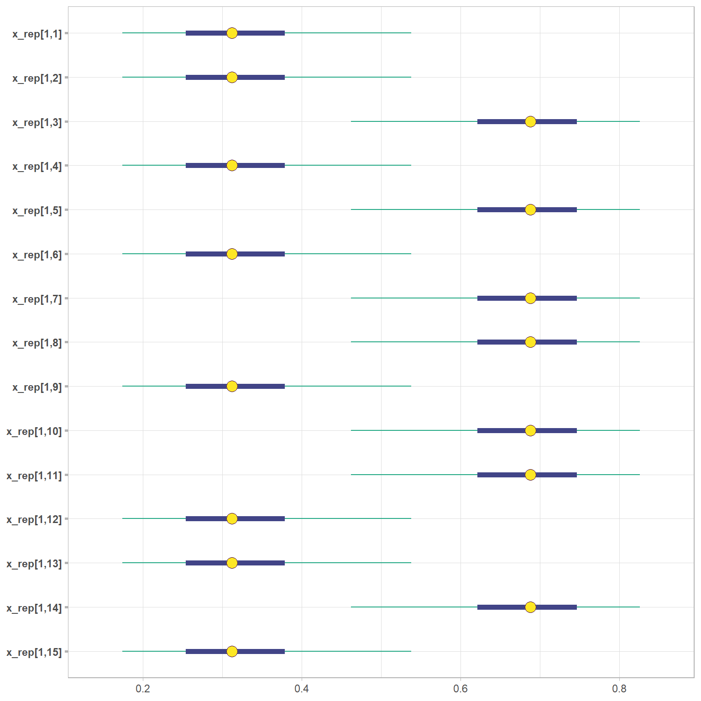

library(tidyverse)
library(cmdstanr)
library(posterior)
library(bayesplot)
theme_set(theme_light())
options(
mc.cores = parallel::detectCores(),
scipen = 9999
)
color_scheme_set("viridis")
react_table <- function(data){
reactable::reactable(
{{data}},
filterable = TRUE,
sortable = TRUE,
highlight = TRUE,
searchable = TRUE
)
}Under Development - Not Complete
As mentioned in the previous post, the first model I will be running in Stan is a Bayesian Network with 3 latent attributes with edges from these attributes to the 15 observed items. I will be creating the data and I am sure there will be issues since the items and the Q-matrix are being created randomly. Along with using the cmdstanr package to call on Stan for the Bayesian analyses, I am using the posterior package to manipulate the chains, iterations, and draws from the analyses and the bayesplot package to visualize the convergence of each parameter included in the bayes net model. I also love to use whatever table producing package I am interested at the time and create a function with html functionality. Specifically, I always include a feature to filter and highlight specific rows. This time I decided to use the reactable package.
set.seed(12345)
bern_dist <- function(prob_value)(
rbinom(n = 30, size = 1, prob = prob_value)
)
y <- tibble(
y1 = bern_dist(prob = .7),
y2 = bern_dist(prob = .74),
y3 = bern_dist(prob = .88),
y4 = bern_dist(prob = .90),
y5 = bern_dist(prob = .64),
y6 = bern_dist(prob = .61),
y7 = bern_dist(prob = .79),
y8 = bern_dist(prob = .89),
y9 = bern_dist(prob = .81),
y10 = bern_dist(prob = .54),
y11 = bern_dist(prob = .60),
y12 = bern_dist(prob = .46),
y13 = bern_dist(prob = .37),
y14 = bern_dist(prob = .3),
y15 = bern_dist(prob = .65),
) |>
rowid_to_column() |>
rename(
studentid = rowid
)
q_matrix <- tibble(
item_id = map_chr(1:15, ~paste0("y", .x)),
att1 = c(1, 0, 0, 1, 0, 0, 1, 0, 0, 1, 0, 0, 1, 0, 0),
att2 = c(0, 1, 0, 0, 1, 0, 0, 1, 0, 0, 1, 0, 0, 1, 0),
att3 = c(0, 0, 1, 0, 0, 1, 0, 0, 1, 0, 0, 1, 0, 0, 1)
)
skills <- 3
skill_combo <- rep(list(0:1), skills)
alpha <- expand.grid(skill_combo)
alpha <- alpha |>
rename(
att1 = Var1,
att2 = Var2,
att3 = Var3
) |>
mutate(
class = seq(1:nrow(alpha)),
.before = att1
)The code above is from the previous post as well that discusses the creation of the binary data, the Q-matrix, and the attribute profile matrix.
stan_file <- list(
J = nrow(y[,-1]),
I = ncol(y[,-1]),
K = ncol(q_matrix[,-1]),
C = nrow(alpha),
X = y[,-1],
Q = q_matrix[, -1],
alpha = alpha[,-1]
)Next, it is easiest to put your Stan data into a list. So here I take all the tibbles I created for my data, the Q-matrix, and the attribute profile matrix and only call on the columns and rows that are crucial for the bayes net model. For instance, The J, I, K, and C list values are all important for looping through:
J = The number of rows of data; in this case there are 30 “students”
I = The number of columns in the dataset; which is 15 excluding the first column
K = The number of latent attributes/skills
C = The number of rows in the attribute profile matrix. Each row is a latent class with a different set of attribute mastery proficiencies.
Additionally, we also need to include the actual data to be referenced in our analysis in Stan. For some reason, I decided to shift from y for the actual data and then X in the analyses. I think I did this from some of the resources I used having X and then other resources using y. In any case, I will draw attention to the data and reference back to the values either being y or X.
set.seed(12345)
mod <- cmdstan_model(here::here("posts/2024-07-10-bayes-net-part2-estimation/simple_bayes_net.stan"))Warning in readLines(stan_file): incomplete final line found on
'C:/Users/Jonathan/Documents/GitHubRepos/log-of-jandp/posts/2024-07-10-bayes-net-part2-estimation/simple_bayes_net.stan'In file included from stan/src/stan/model/model_header.hpp:11:
stan/src/stan/model/model_base_crtp.hpp:159: warning: 'stan::math::var stan::model::model_base_crtp<M>::log_prob(std::vector<stan::math::var_value<double>, std::allocator<stan::math::var_value<double> > >&, std::vector<int>&, std::ostream*) const [with M = simple_bayes_net_model_namespace::simple_bayes_net_model; stan::math::var = stan::math::var_value<double>; std::ostream = std::basic_ostream<char>]' was hidden [-Woverloaded-virtual=]
159 | inline math::var log_prob(std::vector<math::var>& theta,C:/Users/Jonathan/AppData/Local/Temp/Rtmp8cZ17t/model-3aac173c6e5e.hpp:1635: note: by 'simple_bayes_net_model_namespace::simple_bayes_net_model::log_prob'
1635 | log_prob(std::vector<T_>& params_r, std::vector<int>& params_i,
stan/src/stan/model/model_base_crtp.hpp:154: warning: 'double stan::model::model_base_crtp<M>::log_prob(std::vector<double, std::allocator<double> >&, std::vector<int>&, std::ostream*) const [with M = simple_bayes_net_model_namespace::simple_bayes_net_model; std::ostream = std::basic_ostream<char>]' was hidden [-Woverloaded-virtual=]
154 | inline double log_prob(std::vector<double>& theta, std::vector<int>& theta_i,
C:/Users/Jonathan/AppData/Local/Temp/Rtmp8cZ17t/model-3aac173c6e5e.hpp:1635: note: by 'simple_bayes_net_model_namespace::simple_bayes_net_model::log_prob'
1635 | log_prob(std::vector<T_>& params_r, std::vector<int>& params_i,stan/src/stan/model/model_base_crtp.hpp:96: warning: 'stan::math::var stan::model::model_base_crtp<M>::log_prob(Eigen::Matrix<stan::math::var_value<double>, -1, 1>&, std::ostream*) const [with M = simple_bayes_net_model_namespace::simple_bayes_net_model; stan::math::var = stan::math::var_value<double>; std::ostream = std::basic_ostream<char>]' was hidden [-Woverloaded-virtual=]
96 | inline math::var log_prob(Eigen::Matrix<math::var, -1, 1>& theta,C:/Users/Jonathan/AppData/Local/Temp/Rtmp8cZ17t/model-3aac173c6e5e.hpp:1635: note: by 'simple_bayes_net_model_namespace::simple_bayes_net_model::log_prob'
1635 | log_prob(std::vector<T_>& params_r, std::vector<int>& params_i,stan/src/stan/model/model_base_crtp.hpp:91: warning: 'double stan::model::model_base_crtp<M>::log_prob(Eigen::VectorXd&, std::ostream*) const [with M = simple_bayes_net_model_namespace::simple_bayes_net_model; Eigen::VectorXd = Eigen::Matrix<double, -1, 1>; std::ostream = std::basic_ostream<char>]' was hidden [-Woverloaded-virtual=]
91 | inline double log_prob(Eigen::VectorXd& theta,C:/Users/Jonathan/AppData/Local/Temp/Rtmp8cZ17t/model-3aac173c6e5e.hpp:1635: note: by 'simple_bayes_net_model_namespace::simple_bayes_net_model::log_prob'
1635 | log_prob(std::vector<T_>& params_r, std::vector<int>& params_i,stan/src/stan/model/model_base_crtp.hpp:205: warning: 'void stan::model::model_base_crtp<M>::write_array(stan::rng_t&, std::vector<double, std::allocator<double> >&, std::vector<int>&, std::vector<double, std::allocator<double> >&, bool, bool, std::ostream*) const [with M = simple_bayes_net_model_namespace::simple_bayes_net_model; stan::rng_t = boost::random::mixmax_engine<17, 36, 0>; std::ostream = std::basic_ostream<char>]' was hidden [-Woverloaded-virtual=]
205 | void write_array(stan::rng_t& rng, std::vector<double>& theta,C:/Users/Jonathan/AppData/Local/Temp/Rtmp8cZ17t/model-3aac173c6e5e.hpp:1612: note: by 'simple_bayes_net_model_namespace::simple_bayes_net_model::write_array'
1612 | write_array(RNG& base_rng, std::vector<double>& params_r, std::vector<int>&
stan/src/stan/model/model_base_crtp.hpp:136: warning: 'void stan::model::model_base_crtp<M>::write_array(stan::rng_t&, Eigen::VectorXd&, Eigen::VectorXd&, bool, bool, std::ostream*) const [with M = simple_bayes_net_model_namespace::simple_bayes_net_model; stan::rng_t = boost::random::mixmax_engine<17, 36, 0>; Eigen::VectorXd = Eigen::Matrix<double, -1, 1>; std::ostream = std::basic_ostream<char>]' was hidden [-Woverloaded-virtual=]
136 | void write_array(stan::rng_t& rng, Eigen::VectorXd& theta,
C:/Users/Jonathan/AppData/Local/Temp/Rtmp8cZ17t/model-3aac173c6e5e.hpp:1612: note: by 'simple_bayes_net_model_namespace::simple_bayes_net_model::write_array'
1612 | write_array(RNG& base_rng, std::vector<double>& params_r, std::vector<int>&fit <- mod$sample(
data = stan_file,
seed = 12345,
iter_warmup = 2000,
iter_sampling = 2000
)Running MCMC with 4 chains, at most 12 in parallel...
Chain 1 Iteration: 1 / 4000 [ 0%] (Warmup)
Chain 2 Iteration: 1 / 4000 [ 0%] (Warmup)
Chain 3 Iteration: 1 / 4000 [ 0%] (Warmup)
Chain 4 Iteration: 1 / 4000 [ 0%] (Warmup)
Chain 1 Iteration: 100 / 4000 [ 2%] (Warmup)
Chain 2 Iteration: 100 / 4000 [ 2%] (Warmup)
Chain 3 Iteration: 100 / 4000 [ 2%] (Warmup)
Chain 4 Iteration: 100 / 4000 [ 2%] (Warmup)
Chain 2 Iteration: 200 / 4000 [ 5%] (Warmup)
Chain 1 Iteration: 200 / 4000 [ 5%] (Warmup)
Chain 4 Iteration: 200 / 4000 [ 5%] (Warmup)
Chain 3 Iteration: 200 / 4000 [ 5%] (Warmup)
Chain 2 Iteration: 300 / 4000 [ 7%] (Warmup)
Chain 4 Iteration: 300 / 4000 [ 7%] (Warmup)
Chain 1 Iteration: 300 / 4000 [ 7%] (Warmup)
Chain 3 Iteration: 300 / 4000 [ 7%] (Warmup)
Chain 2 Iteration: 400 / 4000 [ 10%] (Warmup)
Chain 4 Iteration: 400 / 4000 [ 10%] (Warmup)
Chain 1 Iteration: 400 / 4000 [ 10%] (Warmup)
Chain 3 Iteration: 400 / 4000 [ 10%] (Warmup)
Chain 2 Iteration: 500 / 4000 [ 12%] (Warmup)
Chain 4 Iteration: 500 / 4000 [ 12%] (Warmup)
Chain 1 Iteration: 500 / 4000 [ 12%] (Warmup)
Chain 3 Iteration: 500 / 4000 [ 12%] (Warmup)
Chain 2 Iteration: 600 / 4000 [ 15%] (Warmup)
Chain 4 Iteration: 600 / 4000 [ 15%] (Warmup)
Chain 1 Iteration: 600 / 4000 [ 15%] (Warmup)
Chain 3 Iteration: 600 / 4000 [ 15%] (Warmup)
Chain 2 Iteration: 700 / 4000 [ 17%] (Warmup)
Chain 4 Iteration: 700 / 4000 [ 17%] (Warmup)
Chain 1 Iteration: 700 / 4000 [ 17%] (Warmup)
Chain 3 Iteration: 700 / 4000 [ 17%] (Warmup)
Chain 2 Iteration: 800 / 4000 [ 20%] (Warmup)
Chain 4 Iteration: 800 / 4000 [ 20%] (Warmup)
Chain 1 Iteration: 800 / 4000 [ 20%] (Warmup)
Chain 3 Iteration: 800 / 4000 [ 20%] (Warmup)
Chain 2 Iteration: 900 / 4000 [ 22%] (Warmup)
Chain 4 Iteration: 900 / 4000 [ 22%] (Warmup)
Chain 3 Iteration: 900 / 4000 [ 22%] (Warmup)
Chain 1 Iteration: 900 / 4000 [ 22%] (Warmup)
Chain 4 Iteration: 1000 / 4000 [ 25%] (Warmup)
Chain 2 Iteration: 1000 / 4000 [ 25%] (Warmup)
Chain 3 Iteration: 1000 / 4000 [ 25%] (Warmup)
Chain 1 Iteration: 1000 / 4000 [ 25%] (Warmup)
Chain 4 Iteration: 1100 / 4000 [ 27%] (Warmup)
Chain 2 Iteration: 1100 / 4000 [ 27%] (Warmup)
Chain 3 Iteration: 1100 / 4000 [ 27%] (Warmup)
Chain 1 Iteration: 1100 / 4000 [ 27%] (Warmup)
Chain 4 Iteration: 1200 / 4000 [ 30%] (Warmup)
Chain 2 Iteration: 1200 / 4000 [ 30%] (Warmup)
Chain 3 Iteration: 1200 / 4000 [ 30%] (Warmup)
Chain 1 Iteration: 1200 / 4000 [ 30%] (Warmup)
Chain 4 Iteration: 1300 / 4000 [ 32%] (Warmup)
Chain 2 Iteration: 1300 / 4000 [ 32%] (Warmup)
Chain 3 Iteration: 1300 / 4000 [ 32%] (Warmup)
Chain 1 Iteration: 1300 / 4000 [ 32%] (Warmup)
Chain 4 Iteration: 1400 / 4000 [ 35%] (Warmup)
Chain 2 Iteration: 1400 / 4000 [ 35%] (Warmup)
Chain 3 Iteration: 1400 / 4000 [ 35%] (Warmup)
Chain 1 Iteration: 1400 / 4000 [ 35%] (Warmup)
Chain 4 Iteration: 1500 / 4000 [ 37%] (Warmup)
Chain 2 Iteration: 1500 / 4000 [ 37%] (Warmup)
Chain 3 Iteration: 1500 / 4000 [ 37%] (Warmup)
Chain 1 Iteration: 1500 / 4000 [ 37%] (Warmup)
Chain 4 Iteration: 1600 / 4000 [ 40%] (Warmup)
Chain 2 Iteration: 1600 / 4000 [ 40%] (Warmup)
Chain 3 Iteration: 1600 / 4000 [ 40%] (Warmup)
Chain 1 Iteration: 1600 / 4000 [ 40%] (Warmup)
Chain 4 Iteration: 1700 / 4000 [ 42%] (Warmup)
Chain 2 Iteration: 1700 / 4000 [ 42%] (Warmup)
Chain 3 Iteration: 1700 / 4000 [ 42%] (Warmup)
Chain 1 Iteration: 1700 / 4000 [ 42%] (Warmup)
Chain 4 Iteration: 1800 / 4000 [ 45%] (Warmup)
Chain 2 Iteration: 1800 / 4000 [ 45%] (Warmup)
Chain 3 Iteration: 1800 / 4000 [ 45%] (Warmup)
Chain 1 Iteration: 1800 / 4000 [ 45%] (Warmup)
Chain 4 Iteration: 1900 / 4000 [ 47%] (Warmup)
Chain 2 Iteration: 1900 / 4000 [ 47%] (Warmup)
Chain 3 Iteration: 1900 / 4000 [ 47%] (Warmup)
Chain 1 Iteration: 1900 / 4000 [ 47%] (Warmup)
Chain 4 Iteration: 2000 / 4000 [ 50%] (Warmup)
Chain 2 Iteration: 2000 / 4000 [ 50%] (Warmup)
Chain 3 Iteration: 2000 / 4000 [ 50%] (Warmup)
Chain 4 Iteration: 2001 / 4000 [ 50%] (Sampling)
Chain 2 Iteration: 2001 / 4000 [ 50%] (Sampling)
Chain 3 Iteration: 2001 / 4000 [ 50%] (Sampling)
Chain 1 Iteration: 2000 / 4000 [ 50%] (Warmup)
Chain 1 Iteration: 2001 / 4000 [ 50%] (Sampling)
Chain 2 Iteration: 2100 / 4000 [ 52%] (Sampling)
Chain 4 Iteration: 2100 / 4000 [ 52%] (Sampling)
Chain 1 Iteration: 2100 / 4000 [ 52%] (Sampling)
Chain 3 Iteration: 2100 / 4000 [ 52%] (Sampling)
Chain 1 Iteration: 2200 / 4000 [ 55%] (Sampling)
Chain 4 Iteration: 2200 / 4000 [ 55%] (Sampling)
Chain 2 Iteration: 2200 / 4000 [ 55%] (Sampling)
Chain 3 Iteration: 2200 / 4000 [ 55%] (Sampling)
Chain 1 Iteration: 2300 / 4000 [ 57%] (Sampling)
Chain 3 Iteration: 2300 / 4000 [ 57%] (Sampling)
Chain 2 Iteration: 2300 / 4000 [ 57%] (Sampling)
Chain 4 Iteration: 2300 / 4000 [ 57%] (Sampling)
Chain 1 Iteration: 2400 / 4000 [ 60%] (Sampling)
Chain 3 Iteration: 2400 / 4000 [ 60%] (Sampling)
Chain 4 Iteration: 2400 / 4000 [ 60%] (Sampling)
Chain 2 Iteration: 2400 / 4000 [ 60%] (Sampling)
Chain 1 Iteration: 2500 / 4000 [ 62%] (Sampling)
Chain 3 Iteration: 2500 / 4000 [ 62%] (Sampling)
Chain 4 Iteration: 2500 / 4000 [ 62%] (Sampling)
Chain 1 Iteration: 2600 / 4000 [ 65%] (Sampling)
Chain 2 Iteration: 2500 / 4000 [ 62%] (Sampling)
Chain 3 Iteration: 2600 / 4000 [ 65%] (Sampling)
Chain 1 Iteration: 2700 / 4000 [ 67%] (Sampling)
Chain 4 Iteration: 2600 / 4000 [ 65%] (Sampling)
Chain 2 Iteration: 2600 / 4000 [ 65%] (Sampling)
Chain 1 Iteration: 2800 / 4000 [ 70%] (Sampling)
Chain 3 Iteration: 2700 / 4000 [ 67%] (Sampling)
Chain 4 Iteration: 2700 / 4000 [ 67%] (Sampling)
Chain 2 Iteration: 2700 / 4000 [ 67%] (Sampling)
Chain 1 Iteration: 2900 / 4000 [ 72%] (Sampling)
Chain 3 Iteration: 2800 / 4000 [ 70%] (Sampling)
Chain 4 Iteration: 2800 / 4000 [ 70%] (Sampling)
Chain 2 Iteration: 2800 / 4000 [ 70%] (Sampling)
Chain 1 Iteration: 3000 / 4000 [ 75%] (Sampling)
Chain 3 Iteration: 2900 / 4000 [ 72%] (Sampling)
Chain 4 Iteration: 2900 / 4000 [ 72%] (Sampling)
Chain 1 Iteration: 3100 / 4000 [ 77%] (Sampling)
Chain 2 Iteration: 2900 / 4000 [ 72%] (Sampling)
Chain 3 Iteration: 3000 / 4000 [ 75%] (Sampling)
Chain 1 Iteration: 3200 / 4000 [ 80%] (Sampling)
Chain 4 Iteration: 3000 / 4000 [ 75%] (Sampling)
Chain 2 Iteration: 3000 / 4000 [ 75%] (Sampling)
Chain 3 Iteration: 3100 / 4000 [ 77%] (Sampling)
Chain 1 Iteration: 3300 / 4000 [ 82%] (Sampling)
Chain 4 Iteration: 3100 / 4000 [ 77%] (Sampling)
Chain 2 Iteration: 3100 / 4000 [ 77%] (Sampling)
Chain 1 Iteration: 3400 / 4000 [ 85%] (Sampling)
Chain 3 Iteration: 3200 / 4000 [ 80%] (Sampling)
Chain 4 Iteration: 3200 / 4000 [ 80%] (Sampling)
Chain 2 Iteration: 3200 / 4000 [ 80%] (Sampling)
Chain 1 Iteration: 3500 / 4000 [ 87%] (Sampling)
Chain 3 Iteration: 3300 / 4000 [ 82%] (Sampling)
Chain 4 Iteration: 3300 / 4000 [ 82%] (Sampling)
Chain 1 Iteration: 3600 / 4000 [ 90%] (Sampling)
Chain 2 Iteration: 3300 / 4000 [ 82%] (Sampling)
Chain 3 Iteration: 3400 / 4000 [ 85%] (Sampling)
Chain 1 Iteration: 3700 / 4000 [ 92%] (Sampling)
Chain 4 Iteration: 3400 / 4000 [ 85%] (Sampling)
Chain 2 Iteration: 3400 / 4000 [ 85%] (Sampling)
Chain 3 Iteration: 3500 / 4000 [ 87%] (Sampling)
Chain 1 Iteration: 3800 / 4000 [ 95%] (Sampling)
Chain 2 Iteration: 3500 / 4000 [ 87%] (Sampling)
Chain 4 Iteration: 3500 / 4000 [ 87%] (Sampling)
Chain 3 Iteration: 3600 / 4000 [ 90%] (Sampling)
Chain 1 Iteration: 3900 / 4000 [ 97%] (Sampling)
Chain 2 Iteration: 3600 / 4000 [ 90%] (Sampling)
Chain 4 Iteration: 3600 / 4000 [ 90%] (Sampling)
Chain 1 Iteration: 4000 / 4000 [100%] (Sampling)
Chain 1 finished in 37.6 seconds.
Chain 3 Iteration: 3700 / 4000 [ 92%] (Sampling)
Chain 2 Iteration: 3700 / 4000 [ 92%] (Sampling)
Chain 4 Iteration: 3700 / 4000 [ 92%] (Sampling)
Chain 3 Iteration: 3800 / 4000 [ 95%] (Sampling)
Chain 2 Iteration: 3800 / 4000 [ 95%] (Sampling)
Chain 4 Iteration: 3800 / 4000 [ 95%] (Sampling)
Chain 3 Iteration: 3900 / 4000 [ 97%] (Sampling)
Chain 2 Iteration: 3900 / 4000 [ 97%] (Sampling)
Chain 4 Iteration: 3900 / 4000 [ 97%] (Sampling)
Chain 3 Iteration: 4000 / 4000 [100%] (Sampling)
Chain 3 finished in 41.5 seconds.
Chain 2 Iteration: 4000 / 4000 [100%] (Sampling)
Chain 4 Iteration: 4000 / 4000 [100%] (Sampling)
Chain 4 finished in 42.1 seconds.
Chain 2 finished in 42.2 seconds.
All 4 chains finished successfully.
Mean chain execution time: 40.8 seconds.
Total execution time: 42.4 seconds.# fit$save_object("simple_bayes_net.RDS")So this next part will be different depending on whether or not you are using RStan or like in this case cmdstanR. If you look up the RStan documentation, I am sure you can find a beginner-friendly tutorial that shows how you would conduct the analysis. For cmdstanR, you call on your Stan file. Below is the Stan code or if you’d like to see it side-by-side, the Stan file can be found here. I have kept the defaults and I always include the arguments for the number of warmup iterations and the sampling iterations, just in case I want to make changes to the number of iterations.
# fit <- read_rds(here::here("posts/2024-07-10-bayes-net-part2-estimation/simple_bayes_net.RDS"))
fit$diagnostic_summary()$num_divergent
[1] 0 0 0 0
$num_max_treedepth
[1] 0 0 0 0
$ebfmi
[1] 0.9748978 0.9855169 0.9468038 0.9679686bn_converge <- summarize_draws(fit$draws(), default_convergence_measures())
bn_measure <- summarize_draws(fit$draws(), default_summary_measures())
bn_converge |> arrange(desc(rhat)) |> head()# A tibble: 6 × 4
variable rhat ess_bulk ess_tail
<chr> <dbl> <dbl> <dbl>
1 lp__ 1.00 3019. 4683.
2 pie 1.00 11711. 6570.
3 log_item[15] 1.00 11711. 6570.
4 x_rep[1,1] 1.00 11711. 6570.
5 x_rep[2,1] 1.00 11711. 6570.
6 x_rep[3,1] 1.00 11711. 6570.bn_measure |> mutate(across(-variable, ~round(.x, 3))) |> react_table()I also included the summarized convergence measures and summary statistics for all of the draws. I also will create an interactive table to look over the posterior draws of each parameter.
y_rep <- fit$draws("x_rep") |> as_draws_matrix()
stu_resp_attr <- fit$draws("prob_resp_attr") |> as_draws_matrix()I decided to extract the replicated values for the items and the probabilities oof each student’s mastery of each of the three latent attributes.
mcmc_trace(exp(y_rep[,seq(1, 450, 30)])) +
scale_y_continuous(limits = c(0, 1))
y |> react_table()Next, I decided to compare the probabilities of each item for one student by having a sequence going from 1 to 450 (end of the columns in the matrix) to get the draws for the first student. As we can see from the traceplots for the first student and the originaly data, the original responses and the probabilities with a probability threshold of 0.5 match one another.
mcmc_intervals(exp(y_rep[,seq(1, 450, 30)]))mcmc_areas(exp(y_rep[,seq(1, 450, 30)]))ppc_intervals(
y = y |> pull(y1) |> as.vector(),
yrep = exp(y_rep[, 1:30])
) +
geom_hline(yintercept = .5, color = "black", linetype = 2) +
coord_flip()I enjoy using traceplots just to see how the iterations are doing and that they look like radio static. If we do not wish to use traceplots, we can also use intervals or areas. Both of which show the credible intervals of our probabilities. Lastly, there is the option to use the posterior predictive check intervals where we can compare the probabilities to the actual responses in the same plot. At least for the first student we can see that the replicated data matches the actual data well.
library(loo)This is loo version 2.8.0- Online documentation and vignettes at mc-stan.org/loo- As of v2.0.0 loo defaults to 1 core but we recommend using as many as possible. Use the 'cores' argument or set options(mc.cores = NUM_CORES) for an entire session. - Windows 10 users: loo may be very slow if 'mc.cores' is set in your .Rprofile file (see https://github.com/stan-dev/loo/issues/94).loo(y_rep)
Computed from 8000 by 450 log-likelihood matrix.
Estimate SE
elpd_loo -303.2 7.6
p_loo 8.1 0.3
looic 606.4 15.2
------
MCSE of elpd_loo is 0.0.
MCSE and ESS estimates assume independent draws (r_eff=1).
All Pareto k estimates are good (k < 0.7).
See help('pareto-k-diagnostic') for details.waic(y_rep)
Computed from 8000 by 450 log-likelihood matrix.
Estimate SE
elpd_waic -303.2 7.6
p_waic 8.1 0.3
waic 606.4 15.2bn_resid <- y[,-1] - exp(y_rep)
bn_resid^2 |>
as_tibble() |>
rowid_to_column() |>
ggplot(
aes(
rowid,
y2
)
) +
geom_point(
alpha = .7
)actual_stu_resp_attr <- tibble(
studentid = 1:nrow(y),
att1 = runif(nrow(y), 0, 1),
att2 = runif(nrow(y), 0, 1),
att3 = runif(nrow(y), 0, 1)
) |>
mutate(
across(
-studentid,
~if_else(.x > .5, 1, 0)
)
)The last thing I thought to do for this analysis was to create an artificial dataset of all the student attribute mastery responses. I will use this to compare the accuracy of our model in correctly classifying if students had mastery on all of the attributes.
stu_resp_attr_mean <- stu_resp_attr |>
as_tibble() |>
summarize(
across(
everything(),
~mean(.x)
)
)
stu_resp_attr_class <- stu_resp_attr_mean |>
mutate(
across(
everything(),
~if_else(.x > .5, 1, 0)
)
)
stu_resp_attr_class <- stu_resp_attr_class |>
pivot_longer(
everything()
) |>
separate(
name,
into = c("stu", "att"),
sep = ","
) |>
mutate(
stu = str_remove(stu, "\\["),
att = str_remove(att, "\\]"),
att = paste0("att", att),
stu = str_remove(stu, "prob_resp_attr")
) |>
pivot_wider(
names_from = att,
values_from = value
)For the probabilities, first I will get the average of the draws for each student and their probability of mastery for each of the three attributes. I again used a threshold of 0.5 for classifying whether a student met mastery of each attribute and then did some manipulation to get the data into a wide format where each attribute is its own column and each student is a row. We can how see how well the model classifies these students into mastery of each attribute.
map2(
stu_resp_attr_class[,2:4],
actual_stu_resp_attr[,2:4],
~table(.x, .y)
)$att1
.y
.x 0 1
1 15 15
$att2
.y
.x 0 1
1 14 16
$att3
.y
.x 0 1
0 1 2
1 11 16map2(
stu_resp_attr_class[,2:4],
actual_stu_resp_attr[,2:4],
~prop.table(
table(.x, .y)
)
)$att1
.y
.x 0 1
1 0.5 0.5
$att2
.y
.x 0 1
1 0.4666667 0.5333333
$att3
.y
.x 0 1
0 0.03333333 0.06666667
1 0.36666667 0.53333333As shown above, we can see the counts and percentages for the classification of each attribute. We can see that the problem is that the model is predicting that students are mastering each attribute when they have not mastered the attribute. This is resulting in several false positives for the model.
stu_resp_attr_long <- stu_resp_attr_class |>
pivot_longer(-stu)
actual_stu_resp_attr_long <- actual_stu_resp_attr |>
pivot_longer(-studentid)
accuracy_att <- mean(stu_resp_attr_long$value == actual_stu_resp_attr_long$value)
accuracy_att[1] 0.5333333Finally, I pivoted the data to be long so I could compare the values for the actual responses and the posterior draws to show the accuracy of this model. The accuracy value shows that this model was not that accurate with a value of 0.5333333. This is a good starting point, but this may indicate that the model needs better definied priors and may require the edges between the attributes to show latent relationships.